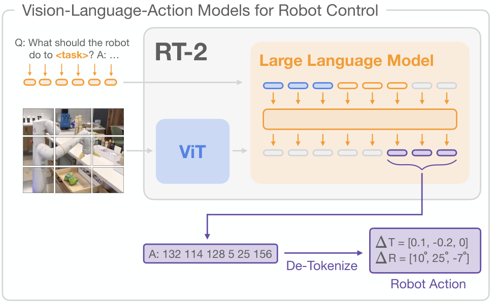
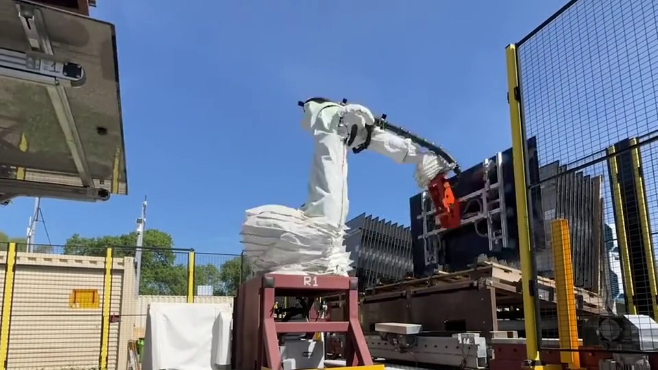
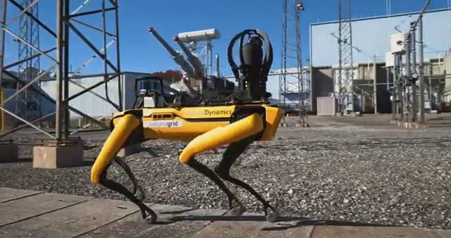

Future Energy Solutions 2026
2026. 10. 29, 전북대학교 국제컨벤션센터
FES 2026 특별강연 1 · Special Address
피지컬 AI와
산업 대전환의 미래지속 가능한 AI 기반 생태계 구축
이한민 실장, 한국기계연구원 가상공학플랫폼연구본부 산업기계DX연구실
Dr. Hanmin LEE, Korea Institute of Machinery & Materials

1
1. AI, 로봇, 그리고 산업기계
산업마다 무인화와 자율화 요구가 먼저 있었고, ChatGPT 모멘트가 그것을 가속
2
2. 프로그래밍에서 학습으로의 전환
데이터와 경험으로 학습해, 더 다양한 작업과 환경에 대응
→
학습 중심
시연·경험→학습→실행
Figure Helix 2.5 (2026.09)
3
3. 행동 생성의 두 접근: VLA와 WAM
이해를 행동으로 연결하는 VLA · 미래를 예측해 행동하는 WAM
VLAVision-Language-Action
장면·언어 지시
로봇 상태
→
시각·언어
이해
→
행동 생성
Chef Robotics · Physical Intelligence Pi API
햄버거 조립
WAMWorld Action Model
장면·언어 지시
로봇 상태
→
미래 예측
활용
→
행동 생성
1X World Model · NEO
티슈 뽑기
4
4. 로봇 두뇌의 구성 방식
하나의 모델이 행동을 직접 출력하거나, 이해와 제어를 나누어 처리
행동 직접 출력Google DeepMind RT-2 (2023)

↑지시와 영상 입력
↑행동 토큰을 로봇 동작으로
영상과 지시를 받아 하나의 VLA 모델이 행동 토큰을 직접 출력
이해와 제어 역할 분담Figure Helix (2025.02)
System 2가 장면과 지시를 이해, System 1이 연속 동작으로 변환
5
5. 로봇 학습의 데이터 격차
인터넷에 축적된 지식에 비해, 로봇의 행동 경험은 부족
Goldberg (2025)의 당시 비교
약 10만 년
학습용 글과 그림을 사람이 읽고 보는 시간
약 1년
당시 최대 원격조작 데이터셋의 누적 기록 시간
로봇에는 관찰, 행동, 결과가 연결된 경험이 필요
6
6. 학습 데이터의 확보와 확장
로봇으로 수집하고, 사람에게서 배우고, 합성 데이터로 확장
1텔레오퍼레이션
Stanford, Mobile ALOHA (2024)
사람 조작으로 관찰과 행동 기록
+
2사람 영상 기반 학습
Figure, Project Go-Big (2025.09)
1인칭 영상으로 로봇 이동 학습
+
3합성 데이터 생성
NVIDIA, DexMimicGen (2024)
소수 시연을 시뮬레이션에서 증강
시뮬레이션 증강월드 모델 생성
다양한 경험으로 확장하고, 실제 작업으로 보정하고 검증
7
7. 현장 적용의 조건
현장의 기준은 안정적인 작업 완수, 지속적인 가동, 비용 대비 생산성
1작업 신뢰도
Telexistence, 일본 편의점 음료 진열
운영자 1명이 약 50대 감시
물건을 떨어뜨리는 등 예외 상황은
원격 운영자가 복구
→
2운영 지속성
Figure 02, BMW 스파턴버그 공장
누적 1,250시간+, 부품 9만 개+
가동률이 아닌 11개월 누적 실적
주요 고장 지점인 전완부 재설계
→
3경제성
Rosendin, 미국 태양광 현장시험
2인 작업조, 8시간 350–400장
3–4인 수작업조 대비 3배 속도
생산성 개선 사례, 투자회수는 별도
작업 성공뿐 아니라, 실패해도 복구하고 계속 운영할 수 있어야 현장 적용
8
8. 휴머노이드 로봇
물류의 단일 반복 작업은 상용 운영, 복잡한 공정은 아직 시연과 실증 단계
Agility Digit
수행 작업AMR의 토트를 컨베이어로 이송
적용 현장GXO 물류센터 (조지아)
현재 수준상용 계약 운영, 누적 토트 10만 개+
Figure 03
수행 작업부품 순서 정렬, 대차 끌기
적용 현장BMW 스파턴버그 공장 물류동
현재 수준생산 공장 물류 작업 현장 시연
UBTECH Walker S
수행 작업부품 상자 운반, 분류
적용 현장BYD, Zeekr, Foxconn 등 공장
현재 수준자동차 공장 현장 실증, 운영 규모 미공개
9
9. 자율주행
정해진 지역과 노선에서는 운전자 없는 상용 운행, 확장은 도시와 노선 단위
Waymo
수행 작업도심 승객 운송 (로보택시)
적용 현장피닉스, LA 등 지정 운행 구역
현재 수준구역 안 무인 유료 운행, 원격 지원은 조언만 하고 운전은 차량
Aurora
수행 작업고속도로 화물 운송
적용 현장미국 남부 고속도로 지정 노선
현재 수준운전석 무인 상업 운행, 승인된 노선 단위로 확장
Baidu Apollo Go
수행 작업도심 승객 운송 (로보택시)
적용 현장중국, 두바이 등 지정 운행 구역
현재 수준일부 도시 완전 무인 상업 운행, 도시 단위로 확장
10
10. 제조·물류
물류의 개별 작업은 상용 운영, 휴머노이드는 적용 공정 확대 중
Amazon Vulcan
수행 작업재고 선반 상품 적재와 피킹
적용 현장아마존 물류센터 (미국, 독일)
현재 수준현장 운영, 상품의 약 3/4 처리, 못 집는 물건은 작업자에게 넘김
Boston Dynamics Stretch
수행 작업컨테이너 박스 하역
적용 현장DHL 북미, 영국, 유럽 창고
현재 수준상용 배치 (2023년~), 추가 1,000대+ MOU (2025.05)
현대차그룹 × Atlas
수행 작업자동차 부품 물류, 순서 정렬
적용 현장현대차 메타플랜트 (미국 조지아)
현재 수준부품 물류와 순서 정렬 훈련 중, 조립은 2030년까지 확대 계획
11
11. 국방
보급, 경계, 후송 임무부터 — 아직은 사람이 원격조종하고 감독하는 운용
우크라이나 지상로봇
수행 작업전선 탄약과 식량 보급, 부상자 후송
적용 현장우크라이나군 전선 부대 (2026)
현재 수준실전 운용, 원격 조종 — 1~6월 6.6만여 건 (국방부 집계)
미 육군 S-MET
수행 작업분대 장비와 물자 운반
적용 현장제10산악사단 훈련 (2025.01)
현재 수준정식 도입, 병사가 원격 조종
Ghost Robotics Vision 60
수행 작업기지 외곽 순찰과 감시
적용 현장미 공군 Tyndall 기지 보안대 (2021)
현재 수준반자율 순찰, 보안 요원 감독 시범
12
12. 농업
정밀작업은 상용 운영, 무인운전은 원격 감독 아래 초기 보급
John Deere See & Spray
수행 작업카메라로 잡초만 골라 제초제 분사
적용 현장미국 옥수수, 대두, 면화 밭
현재 수준상용 판매, 운전자 탑승 — 2025년 500만 에이커+ (회사 발표)
John Deere 자율 트랙터
수행 작업운전석을 비운 무인 경운
적용 현장미국 농가
현재 수준경운 작업 한정, 스마트폰으로 원격 감독
Carbon Robotics LaserWeeder
수행 작업AI가 찾은 잡초를 레이저로 제거
적용 현장미국, 유럽, 호주 채소 농장
현재 수준상용 판매, 트랙터 견인 — 무인 버전은 초기 단계
13
13. 건설
항타와 굴착 적재부터 — 감독 아래 무인 운영 시작
Built Robotics RPD 35
수행 작업태양광 파일 측량, 배분, 항타
적용 현장미국 유틸리티 태양광 단지 (Blattner 등)
현재 수준상용 서비스, 작업 구역 무인 — 현장 감독자가 자재 보급
Bedrock Robotics
수행 작업토공 굴착과 덤프트럭 적재
적용 현장미국 3개 현장 (Zachry, Sundt 등)
현재 수준운전석 무인, 승인된 조건에서만 — 접근 시 자동 정지
Gravis Robotics
수행 작업트렌칭, 토공, 트럭 적재
적용 현장영국 맨체스터 공항, Holcim 채석장 등
현재 수준운전 보조부터 원격, 1인 다수 장비 감독까지
제한된 작업부터 시작해, 숙련자 경험과 현장 검증으로 적용 범위 확대
14
14. 기계연 로봇 연구의 발전
휴머노이드, 필드로봇, 의료로봇으로 확장되는 기계 지능
15
15. 휴머노이드 카이로스
이동과 조작을 위한 로봇 플랫폼과 핵심부품 개발
2026 글로벌 기계기술 포럼 2026. 9. 7.
카이로스 V0.7 탈춤 시연
로드맵2027.4V1▶2030.4V2 초감각, 전신감각▶2035실용화
구동기
2.1kg으로
최대 192 N·m
전용 구동기 5종 자체 설계, 성능 20% 향상
로봇 핸드
핀셋을 쥐고
작은 부품까지
오랜 핸드 연구의 축적
촉각 피부 차별점
쓰다듬는 손길까지
감지
3축 촉각, 자가회복 피부
16
16. 로봇 작업지능과 학습 데이터
사람의 시연을 학습해 다양한 작업으로 확장
1시연 수집
2이해와 계획
3작업 수행 RoGeTA
데이터 팩토리
휴머노이드 여러 대의 동시 시연 수집 환경
▶
명령 이해언어·시각 모델
작업 계획순서 수립과 검증
동작 조합집기, 놓기, 복구
▶
17
17. 필드로봇의 자율작업
숙련이 필요한 건설·농업 작업의 자율화
건설관로 굴착 자율작업
KIMM 3.5톤 자율굴착기
지형 격자 인식 → 굴착 지점
목표 깊이 0.60 m실측 평균 0.63 m
농업과수원 병해충 예찰
노지 과수원 자율주행
잎 사이 병해충 탐지
사람이 일일이 보던 예찰로봇이 주행하며영상으로 탐지·기록
18
18. 필드로봇 피지컬 AI
공통 인지 모델 하나로 건설·농업·재난 장비를 자율화
인구절벽·위험환경 대응
AI 필드로봇 기술 개발
19
19. 의료로봇
정밀조작과 원격제어로 의료 역량 확장
정밀조작최소침습 카테터 수술로봇
심장 모형 속 카테터
가는 관 끝을 떨림 없이 원하는 방향으로 조향
원격제어울릉도–대구 원격 초음파
의사 · 조작
⇄295 km왕복 지연
약 40 ms
로봇 · 초음파
의사의 손 조작을 먼 곳의 로봇이 따라 초음파 영상 획득
20
20. 디지털트윈
실제 장비와 가상 트윈을 실시간 연동해 학습·최적화
실제 장비디지털트윈
자율주행 트랙터 — 실차 작업을 트윈에서 실시간 관제
디지털트윈실제 설비
공작기계 자율제조 셀 — 설비·로봇 동작을 트윈과 연동
美 Digital Twin Consortium공식 테스트베드
MANDATE-R2R 이차전지 롤투롤 자율제조
실제 설비와 트윈을 실시간 연동, 다중 AI 에이전트가 공정을 스스로 최적화 · 2025.12 등록
21
21. 피지컬 AI 산업생태계
기술 개발부터 현장 활용까지, 연결이 산업 경쟁력을 만든다
→
시스템 통합·제조
카이로스
현장에 쓸 수 있는
로봇 시스템으로 통합
→
→
KIMM — 핵심기술을 개발하고, 시스템으로 통합해 현장에서 검증하는 연결 역할
22
22. 피지컬 AI와 에너지
에너지는 로봇을 움직이고, 로봇은 에너지 현장에서 일한다
에너지
전원과 충전 — 지속적인 작업의 기반
건설과 점검 — 에너지 현장의 일손
피지컬 AI

© Terabase Energy건설Terabase Terafab
현장 조립라인의 로봇이 태양광 모듈을 구조물에 자동 조립

© Boston Dynamics운영National Grid × Spot
변환소 자율 순회와 열화상 점검, 위험 구역은 관제실에서 원격 조작
23
23. 피지컬 AI의 경쟁력
기술×AI×데이터×에너지×공급망×안보
각 요소의 경쟁력과 연결이 전체의 경쟁력을 결정한다.
24